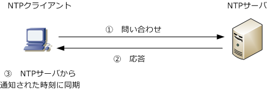
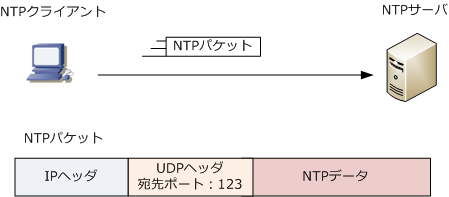
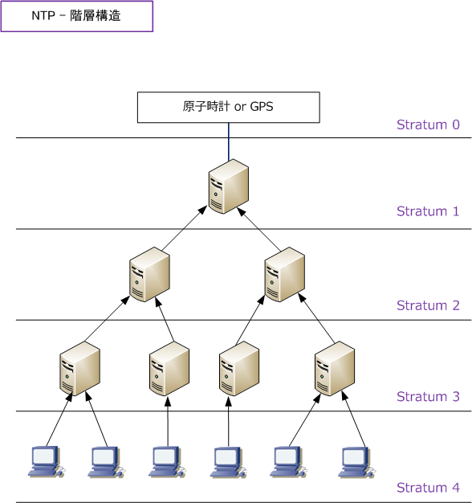
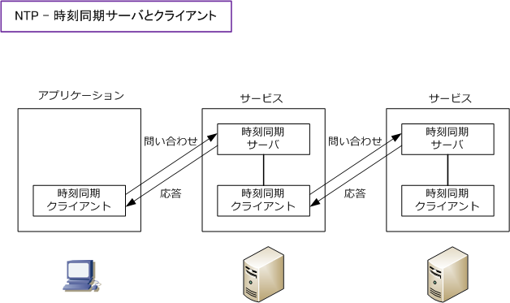
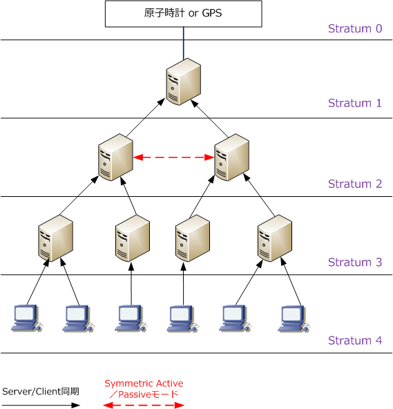
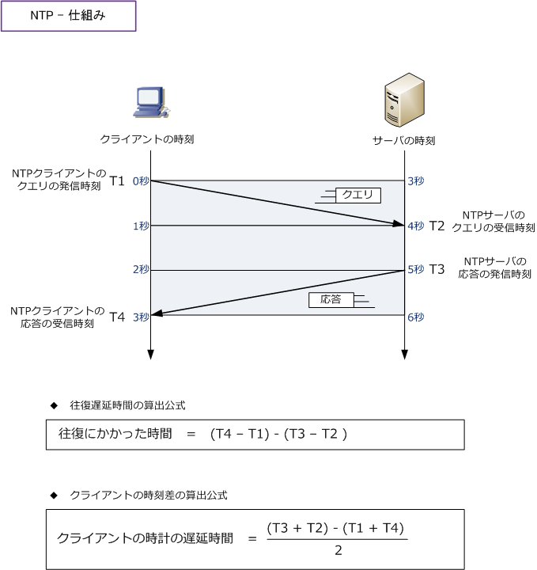

NTP
NTPとは
NTP（Network Time Protocol）は、コンピュータに内蔵されているシステムクロックをネットワークを 介して正しく同期させるためのプロトコル。NTPにより時刻同期を行うことで指定時間に正しくサービス を動作させたり、出力ログを正しく管理できたり、証明書を利用した認証なども正しく行うことができます。

NTPのパケット
NTPクライアントがNTPサーバにアクセスする際、宛先ポート番号としてUDPポート番号123を使用。 NTPクライアントがNTPサーバにアクセスする際の送信元ポート番号も、ポート番号123を使用します。

NTP - 階層構造
NTPはstratumと呼ばれる階層構造を持っており、最上位のNTPサーバが原子時計やGPSの正確な 時刻源から正しい時刻情報を得て、下位のNTPサーバはそれを参照して時刻同期を行っていきます。 最上位のNTPサーバは「stratum 1」であり、階層を降りるごとにstratumの値が増えていきます。 最大でstratum 15までNTPサーバを構築できます。なお、stratum 16には同期できません。

※ 直結している「 Stratum 0 」と「 Stratum 1 」間では、IP通信ではないので当然ながらNTPで時刻同期はしていません。
NTPサービス - 時刻同期サーバ & 時刻同期クライアント
例えば上図のStratum 2のNTPサーバは上位のNTPサーバ（Stratum 1）から正しい時刻を得ている一方、 下位のNTPサーバ（Stratum 3）には正しい時刻情報を通知しています。つまり、時刻を提供するサーバ 機能と、時刻を取得するクライアント機能の2つの機能を保持しています。

NTP - 同期モード
NTPでよく使用される同期モードには以下の2つがあります。下図では2つの同期モードを示していますが 必ずしもこれら2つのモードを使用する必要はなく、Server / Clientモードだけで構成している設計が多い。
| 同期モード | 説明 |
|---|---|
| Server/Clientモード | NTPクライアントがNTPサーバに対して一方的に同期を行うモード。よく使用されるモード |
| Symmetric Active／Passiveモード |
同じ階層に属するNTPサーバ同士の場合に使われる。グループ化された同期メンバーの 中から、基準となるNTPサーバを動的に決定する。このモードで動作させる場合は、予め このモードで同期するように構成されたNTPサーバでないと正常に動作しない場合がある。 |

NTP - 仕組み
NTPクライアントは、NTPサーバから伝えられる時刻情報をそのまま自身のシステムクロックに同期させる 訳ではありません。NTP情報はネットワークで伝送されるので遅延が発生しています。このネットワークの 遅延を反映した上でNTPクライアントは時刻同期を行います。以下の4つの時刻情報のやりとりを行います。
| 時間軸 | NTPパケットでやりとりされる４つの時刻情報 |
|---|---|
| T1 | NTPクライアントのクエリの発信時刻 |
| T2 | NTPサーバのクエリの受信時刻 |
| T3 | NTPサーバの応答の発信時刻 |
| T4 | NTPクライアントの応答の受信時刻 |

上図前提はクライアントとサーバは、まだNTP同期を取っておらず時間にズレ（遅延）があるとします。 また、ネットワーク内の遅延時間が送信と受信とで等しいとします。往復遅延時間は「パケットの往復時間」 から「サーバの処理時間」を引いたものであることから、(T4-T1) - (T3-T2) の公式により2秒となります。 クライアントの時計の遅延時間は上図の時間軸のズレを確認しなくても、公式によっても3秒だと導けます。
※ 当然これらの2秒や3秒の値を導くのは上図の時間軸を見た方が簡単ですが、公式を知っておきましょう。
NTP - 2036年問題
NTPでは、時刻に1900年1月1日0時0分0秒（UTC）を起点とする32ビットの積算秒数で表しています。 32ビットであるため、起点から42億9496万7295秒までしか表現できません。つまり42億9496万7295秒 経過した2036年2月6日 6時28分15秒 (UTC) の次の秒については、起点と認識してしまうということです。 これによりNTPが誤作動してしまう可能性があるとされています。これがNTPにおける 2036年問題 です。
お勧めの公開NTPサーバ
NTPによる時刻同期がシビアに求められるネットワークシステムでは、そのLANネットワークにstratum 1 のNTPサーバを導入することをお勧めします。一方、インターネット上で公開しているNTPサーバを参照 して時刻同期を行う場合、お勧めの公開NTPサーバ（stratum1）の記事もご参考下さい。
参考：SNTPとは
SNTP（ Simple Network Time Protocol ）とは、NTPの簡易版にあたるプロトコルのことであり、NTPの クライアント専用で使用するプロトコルです。つまり、SNTPを使用するSNTPクライアントは、NTPサーバ から時刻情報を受信するだけの機能しかなく、その他のシステムに対し時刻情報は提供できないプロトコル。
← DNSとは